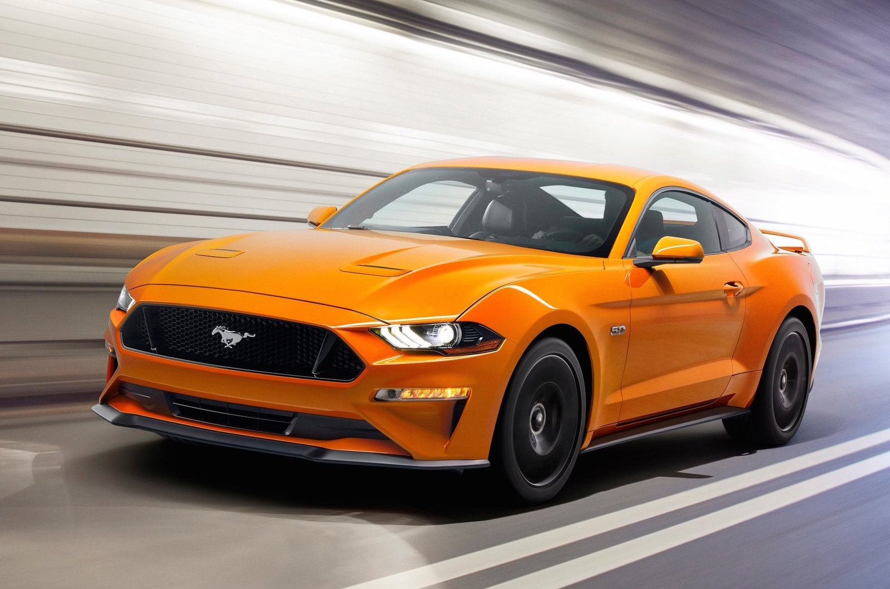

About Me
I was in born in Chicago, Illinois. After living 16 years in the city of Chicago my family and I moved to Skokie, Illinois. I attended Oakton Community College for two years before transferring to IIT. This is my 2nd semester at IIT and I am an ITM major. I enjoy watching basketball, weightlifting, and working on cars. My favorite basketball team is the Cleveland Cavaliers and my favorite basketball player is Lebron James. My favorite car is the Ford Mustang.
Lebron James
LeBron Raymone James (born December 30, 1984) is an American basketball player with the Cleveland Cavaliers. James first garnered national attention as the top high school basketball player in the country. With his unique combination of size, athleticism and court vision, he became one of the premier players in the NBA. After leading the Miami Heat to titles in 2012 and 2013, he returned to Cleveland and helped the franchise claim its first championship in 2016.
Ford Mustang
The Ford Mustang is an American car manufactured by Ford. It was originally based on the platform of the second generation North American Ford Falcon, a compact car. The original 1962 Ford Mustang I two-seater concept car had evolved into the 1963 Mustang II four-seater concept car which Ford used to pretest how the public would take interest in the first production Mustang. The 1963 Mustang II concept car was designed with a variation of the production model's front and rear ends with a roof that was 2.7 inches shorter. Introduced early on April 17, 1964 (16 days after the Plymouth Barracuda), and thus dubbed as a "1964½" by Mustang fans, the 1965 Mustang was the automaker's most successful launch since the Model A. The Mustang has undergone several transformations to its current sixth generation. The Mustang created the "pony car" class of American muscle cars, affordable sporty coupes with long hoods and short rear decks, and gave rise to competitors such as the Chevrolet Camaro, Pontiac Firebird, AMC Javelin, Chrysler's revamped Plymouth Barracuda, and the second generation Dodge Challenger. The Mustang is also credited for inspiring the designs of coupés such as the Toyota Celica and Ford Capri, which were imported to the United States.
Contact Information
Email: hrizwan1@hawk.iit.edu
Phone: (773) 754-5709